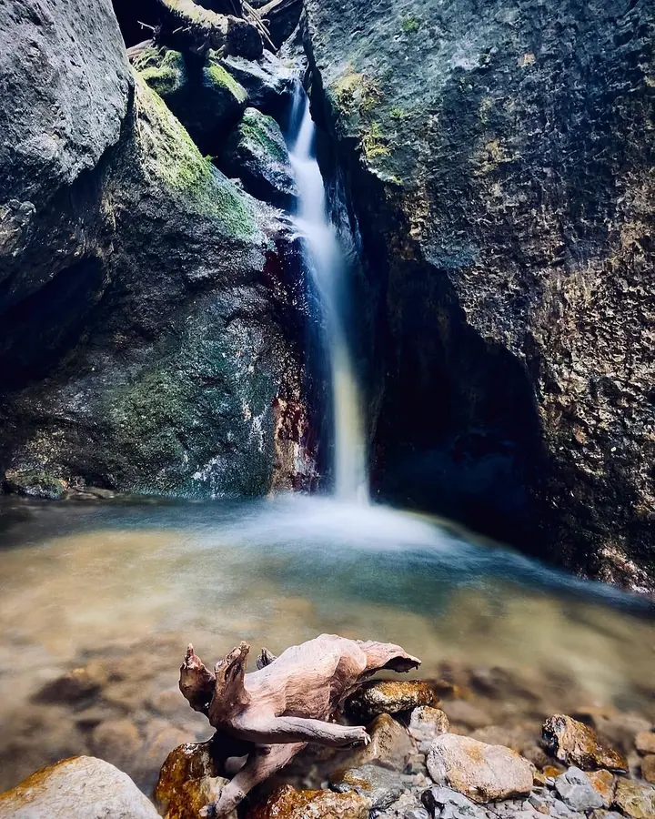
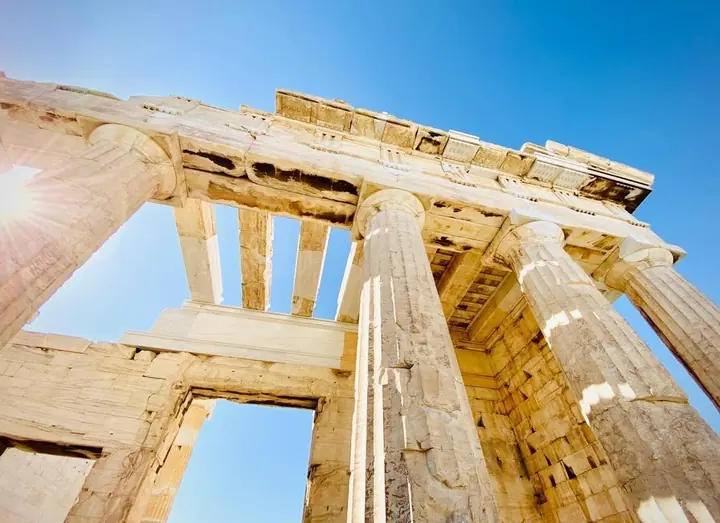
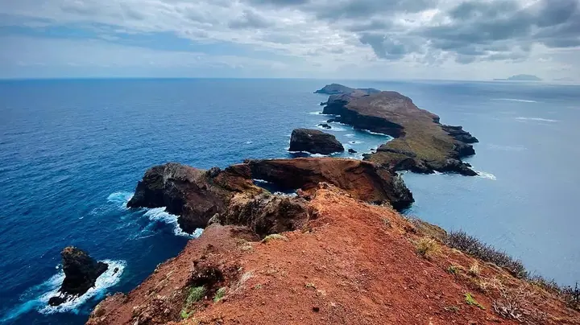
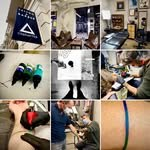

01 / 03
Fotoobrazy
Fotografii nalepím na lehkou Kapa desku, chráním ji UV laminací a vsadím do hliníkového rámu Nielsen. Profil i barvu rámu si vyberete, ceny začínají na 1600 Kč.
Zeptat se na termín→


Krajina, kterou si pověsíte domů
Zeptat se na termín →(01) Ahoj
Jmenuji se Jiří Presl, jsem lékař a fotograf a nejraději fotím krajinu . Za světlem jezdím po Čechách, k moři i do hor a kteroukoli fotku z mé galerie vám rád vytisknu jako obraz na zeď .
79příspěvků s fotkami a příběhy
(02) Co fotím
01 / 03
Fotografii nalepím na lehkou Kapa desku, chráním ji UV laminací a vsadím do hliníkového rámu Nielsen. Profil i barvu rámu si vyberete, ceny začínají na 1600 Kč.
Zeptat se na termín→02 / 03
Panoramata skládám z více vertikálních snímků, takže vyniknou i ve velkém formátu. Nabízím rozměry od 70×30 cm až po 170×70 cm.
Zeptat se na termín→03 / 03
Kteroukoli fotografii z mého webu vám vytisknu na kvalitní papír ve formátu od 30×20 cm do 90×60 cm. Hodí se domů, do kanceláře i jako dárek.
Zeptat se na termín→(04) Postup
Od první zprávy po hotovou galerii.
Krok 1 z 4
Projděte si galerii na mém webu a vyberte snímek, který se vám líbí. Klidně mi napište, poradím vám.
Krok 2 z 4
Domluvíme se, jestli chcete samotnou fotografii, fotoobraz v rámu, nebo velké panorama. Když potřebujete jiný rozměr, spočítám vám cenu individuálně.
Krok 3 z 4
Fotografii nalepím na Kapa desku, aby se nekroutila, ochráním ji UV laminací a vsadím do hliníkového rámu Nielsen v profilu a barvě podle vás.
Krok 4 z 4
Hotový obraz vám předám a můžete si ho pověsit na zeď nebo ho někomu darovat.
Každý obraz začíná venku v krajině
(05) Za objektivem
S fotografováním jsem začal v letech 2005 a 2006. Předtím jsem jako asi každý vlastnil Smenu 8M, která sloužila hlavně jako rodinný dovolenkový záznamník. S prvním digitálním kompaktem jsem pak procestoval Čechy a kus východní a střední Evropy. Byla to doba cvakání, mazání a zase cvakání.
Od roku 2010 se fotografii věnuji naplno. Zaměřuji se hlavně na krajinu, od hvězdné oblohy nad Českou Kanadou přes skály Česko-saského Švýcarska až po svítání nad Marmoladou v Dolomitech. Rád skládám panoramata z několika vertikálních snímků a když se naskytne příležitost, fotím i zvířata, makro, portrét nebo reportáž.
Kromě focení jsem lékař a cyklista. Mé fotografie se několikrát umístily na stupních vítězů ve fotosoutěži Přírodní krásy Evropy. Nejvíc mě ale těší, když si některá z nich najde místo u vás doma, v kanceláři nebo jako dárek pro někoho blízkého.

Jiří
Jiří Presl · Fotograf krajiny a fotoobrazů
Ano. Rozměry v ceníku jsou orientační, a když potřebujete jiný, spočítám vám cenu individuálně.
Samotná fotografie začíná na 300 Kč za formát 30×20 cm, fotoobraz v rámu na 1600 Kč za formát 45×30 cm a panoramatický obraz na 2200 Kč za formát 70×30 cm.
Povrch chrání UV laminace, která drží stálost a věrnost barev. Obraz se dá čistit, takže si udrží původní jas.
Určitě. Fotoobraz se hodí domů, do kanceláře nebo do firemních prostor a je to dárek, který vydrží dlouho.
(07) Kontakt
Napište pár vět o tom, co si představujete, a termín, který se vám hodí.
jp-photo@seznam.cz